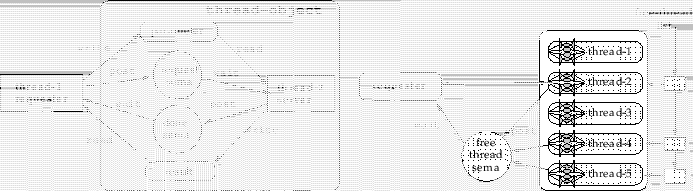
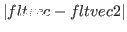
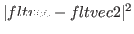
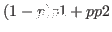
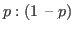

A float-vector is a simple vector whose elements are specialized to
floating point numbers.
A float-vector can be of any size.
When result is specified in an argument list,
it should be a float-vector that holds the result.
float-vector &rest numbers [function]
-
-
makes a new float-vector whose elements are numbers.
Note the difference between (float-vector 1 2 3) and #F(1 2 3).
While the former create a vector each time it is called, the latter
does when it is read.
float-vector-p obj [function]
-
-
returns T if obj is a float-vector.
v+ fltvec1 fltvec2 &optional result [function]
-
-
adds two float-vectors.
v- fltvec1 &optional fltvec2 result [function]
-
-
subtract float-vectors. If fltvec2 is omitted, fltvec1 is negated.
v. fltvec1 fltvec2 [function]
-
- computes the inner product of two float-vectors.
v* fltvec1 fltvec2 &optional result [function]
-
-
computes the outer product of two float-vectors.
v.* fltvec1 fltvec2 fltvec3 [function]
-
-
computes the scaler triple product [A,B,C]=(V. A (V* B C))=(V. (V* A B) C).
v fltvec1 fltvec2 [function]
fltvec1 fltvec2 [function]
-
-
returns T if every element of fltvec1 is smaller than
the corresponding element of fltvec2.
v fltvec1 fltvec2 [function]
fltvec1 fltvec2 [function]
-
-
returns T if every element of fltvec1 is larger than
the corresponding element of fltvec2.
vmin &rest fltvec [function]
-
-
finds the smallest values for each dimension in fltvec,
and makes a float-vector from the values.
Vmin and vmax are used to find the minimal bounding box
from coordinates of vertices.
vmax &rest fltvec [function]
-
-
finds the greatest values for each dimension in fltvec,
and makes a float-vector from the values.
minimal-box v-list minvec maxvec [err] [function]
-
-
computes the minimal bounding box for a given vertex-list,
and stores results in minvec and maxvec.
If a floating number err is specified, the minimal box is grown
by the ratio, i.e. if the err is 0.01, each element of minvec is decreased
by 1% of the distance between minvec and maxvec,
and each element of maxvec is increased by 1%.
Minimal-box returns the distance between minvec and maxvec.
scale number fltvec &optional result [function]
-
-
the scaler number is multiplied to the every element of fltvec.
norm fltvec [function]
-
- 
norm2 fltvec [function]
-
-

normalize-vector fltvec [result] [function]
-
-
normalizes fltvec to have the norm 1.0.
distance fltvec1 fltvec2 [function]
-
-
returns the distance
 between two float-vectors.
distance2 fltvec1 fltvec2 [function]
-
-

homo2normal homovec &optional normalvec [function]
-
-
A homogeneous vector homovec is converted to its normal representation.
homogenize normalvec &optional homovec [function]
-
-
A normal vector normalvec is converted to its homogenous representation.
midpoint p p1 p2 &optional result [function]
-
-
P is float, and p1 and p2 are float-vectors of the same
dimension.
A point
, which is the point
that breaks p1-p2 by the ratio , is returned.
rotate-vector fltvec theta axis &optional result [function]
-
-
rotates 2D or 3D fltvec by theta radian around axis.
Axis can be one of :x, :y, :z, 0, 1, 2 or NIL.
When axis is NIL, fltvec is taken to be two dimensional.
To rotate a vector around an arbitrary axis in 3D space,
make a rotation matrix by the rotation-matrix function and
multiply it to the vector.
2016-03-23